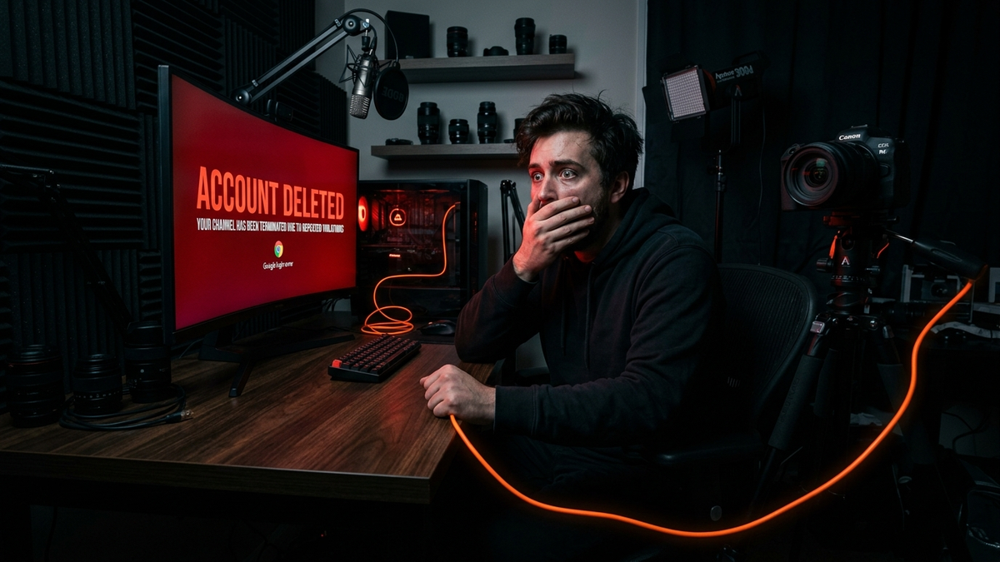

Listen up. Your YouTube channel is gone. Some faceless scammer, probably halfway across the world, is running a crypto scam livestream on it right now. Your heart is pounding, your stomach is in knots, and you feel completely powerless. I get it. I've been in the digital trenches for 15 years, and I've seen this exact scenario play out hundreds of times. This isn't just about losing videos; it's about losing your community, your income, and a piece of your identity. Panic is your enemy right now. A clear, methodical plan is your only weapon.
Forget the generic advice you've read on some corporate help page. We're going to treat this like a digital hostage rescue mission. I'm not going to sugarcoat it; this process can be slow, frustrating, and bureaucratic. But it is winnable. You need to be precise, persistent, and prepared. This guide is your step-by-step playbook, written by someone who has pulled creators out of this exact fire. Read every word. Follow every step. Let's go to work.
What you do in the first hour is critical. It’s not about getting the channel back yet; it's about damage control and stopping the bleeding. The hacker who has your YouTube channel has the keys to your entire Google Account. That means your Gmail, Google Drive, Google Photos, and anything you've ever logged into using "Sign in with Google." Your first priority is to contain the breach and prevent it from cascading into a full-blown identity theft nightmare. Forget about your channel for a moment and focus on locking down the mothership: your core Google Account.
First, from a separate, trusted device (not the one you think might be compromised), try to sign out of all sessions and change your Google Account password. If the hacker has already changed the password and recovery information, you may be locked out. Don't waste time trying to guess the new password. Your next move is to check your email. The hacker needed to get into your account somehow, and that often leaves a trail. Look for security alerts from Google about new sign-ins from unrecognized devices or password changes you didn't authorize. Take screenshots of everything. These are your first pieces of evidence.
Next, think about the attack vector. How did they get in? The most common method by far is a phishing attack disguised as a sponsorship offer. They send you a fake contract or a link to download "their software" for a product review, which is actually malware. This malware steals the session cookies from your browser. Think of a session cookie like a valet key for your Google account; it lets the thief bypass your password and two-factor authentication (2FA) entirely because your browser is already "logged in." This is why your fancy SMS 2FA didn't stop them. If you downloaded any files from a recent sponsor, assume that machine is compromised. Disconnect it from the internet immediately. Don't try to "run a virus scan." Just unplug it. We'll deal with cleaning it later. The immediate goal is to sever the hacker's connection.
Finally, if you can, warn your audience. Use your other social media platforms—Twitter, Instagram, Discord, whatever you have. Post a clear, concise message: "My YouTube channel has been hacked. Do not click any links or engage with any content, especially crypto livestreams. I am working to recover it." This does two things: it protects your audience from being scammed, and it creates a public record of the event, which can be useful later. You are now in a position to begin the recovery process without the hacker digging deeper into your digital life. You've stopped the bleeding; now we prepare for surgery.
This is where most people fail. They fill out a generic "I can't access my account" form and wait for an automated email that never comes. That's the wrong door. For a channel hijacking, you need to get into a specialized queue. The single most effective way for the average creator to do this is by publicly contacting @TeamYouTube on X (formerly Twitter). This is their primary support channel for creators who don't have a dedicated Partner Manager. Do not send them a direct message; they likely have them closed. You need to send a public tweet.
Your tweet should be professional, calm, and contain only the essential information. Write something like: "@TeamYouTube My channel [Your Channel Name] has been hijacked and is currently streaming unauthorized content. I no longer have access to the associated Google Account. Can you please help me start the recovery process? My channel URL is [Your Original Channel URL]." Do NOT include personal information like your email address in the public tweet. The goal of this tweet is to get them to reply and ask you to DM them. Once they do, they will provide you with a special link to a hijack recovery form. This form is different from the standard account recovery options.
Once you have the form, fill it out with extreme precision. This is your official testimony. You will be asked for information like your original Channel ID (the one that starts with UC_), your AdSense Publisher ID, the date you lost access, and a detailed description of what happened. Be factual. State that you believe your computer was compromised by malware from a phishing email, if that's the case. Explain the changes you've seen on the channel: the name was changed, the banner was replaced, and unauthorized videos were uploaded. The more detailed and accurate you are, the faster their internal team can verify your claim. After you submit the form, you will receive a case number. Guard this number with your life. All future communication with YouTube support should reference this case number.
Now comes the hardest part: waiting. YouTube's internal security team is dealing with thousands of these cases. It can take days, or sometimes even weeks, to hear back. They are cross-referencing your information, checking login IP addresses, and analyzing the session data that was used to take over your account. Do not submit the form multiple times, as this can create duplicate cases and slow down the process. You can, however, politely follow up on your original Twitter thread every 72 hours, referencing your case number. Patience and persistence are key. You are in the queue; you just have to wait for your turn.
While you wait for YouTube's team to do their work, you need to act like a digital crime scene investigator. Your job is to assemble a case file so compelling that it leaves no doubt you are the legitimate owner. YouTube support deals with fraudulent claims all the time, so the burden of proof is on you. Simply saying "that's my channel" is not enough. You need to provide cold, hard evidence that documents the "before" and "after" of the hijacking event.
Start by collecting all communication related to the hack. Find that phishing email that started this whole mess. Do not open any attachments or click any links again, but take a full-screen screenshot of the email, making sure the sender's address, the date, and the malicious content are all visible. Go through your Google Account's security history. You can access this at `myaccount.google.com/security`. Look for recent security events. Take screenshots of any unrecognized logins, showing the device type, location, and time. These are digital fingerprints the hacker left behind. If they changed your password or recovery phone number, screenshot those notification emails as well. Organize these screenshots in a folder, giving them clear, descriptive filenames like `Hacker_Login_From_Vietnam_Screenshot.png`.
Next, you need to prove ownership beyond just access. The two most powerful pieces of evidence are your original Channel URL and your AdSense Publisher ID. Your channel URL might have been changed by the hacker to a custom name, but the original ID-based URL (e.g., `youtube.com/channel/UCxxxxxxxxxxxxxxxxx`) is permanent. Hopefully, you have it saved somewhere in an old email, a social media bio link, or a note. If not, you might find it in your browser history. Your AdSense Publisher ID (which looks like `pub-xxxxxxxxxxxxxxxx`) is the golden ticket. It's the unique identifier for your monetization account. You can find this in old AdSense payment confirmation emails or by logging into your AdSense account, assuming the hacker hasn't locked you out of that as well. If you find an old email, screenshot it. This ID proves you are the one who was getting paid.
Finally, document the damage. Go to your hijacked channel (do not log in) and take screenshots of the changes. Capture the new channel name, the new banner art, and the list of unauthorized videos or livestreams the hacker has uploaded. If you have old screenshots of what your channel used to look like, that's even better for a side-by-side comparison. Compile all of this evidence—screenshots of phishing emails, security alerts, your AdSense ID, and the channel's current defaced state—into a single, organized Google Drive folder. When YouTube support contacts you for more information, you can share a link to this folder, giving them everything they need in one go. This level of preparation shows you are serious and helps them accelerate your case.
Turn your scripts into professional videos automatically. Use code PAVEL20 for 20% OFF!
START CREATING WITH PICTORYGetting your account back is just one battle; winning the war is making sure this never, ever happens again. The moment Google support restores your access, your clock starts ticking again. The same vulnerability the hacker used might still exist, or they may have left behind digital backdoors. You have to assume the enemy is still inside the gates and perform a full security sweep before you can relax. The first thing you'll do is set the strongest password you can think of, managed by a reputable password manager like Bitwarden or 1Password. A random, 20-character alphanumeric string is the minimum standard.
Next, and this is non-negotiable, you must enable the strongest form of Two-Factor Authentication (2FA). SMS-based 2FA is better than nothing, but it's vulnerable to SIM-swapping attacks. An authenticator app like Google Authenticator or Authy is much better. But the gold standard, the thing that would have stopped this attack in its tracks, is a physical hardware security key. Buy two of them—I recommend YubiKeys. A security key is a small USB device that you must physically touch to approve a login. A hacker in another country can't steal it, can't phish it, and can't bypass it. Enroll one key as your primary and keep the second one in a safe place (like a fireproof safe) as a backup. This is the single most important security upgrade you will ever make for your online life.
Now, dig deeper. Go to your Google Account's security settings and review all "Third-party apps with account access." This is a list of every app and service you've ever granted permission to access your Google data. The hacker may have authorized a malicious app to maintain persistent access. Revoke access for anything you don't recognize or no longer use. Be ruthless. Then, check your Gmail settings for forwarding rules and filters. A common hacker tactic is to create a rule that automatically forwards all your incoming email to their address and then deletes the original, making them invisible. Check for and delete any rules you didn't create. Finally, review your account recovery options. Ensure the recovery phone number and email address are yours and are themselves secure. Remove any old ones you no longer control.
💡 Expert IT Tip: Enroll in Google's Advanced Protection Program (APP). This is a free, high-security setting designed for journalists, activists, and, yes, high-profile YouTubers. Enrolling requires you to use a hardware security key for all logins, and it drastically limits third-party app access and enhances scanning for incoming threats. It's like putting your Google Account into a bank vault. It might be slightly less convenient because you'll need your key to log in, but the peace of mind is absolute. This is the level of security that professionals use, and it's available to you for the cost of two security keys.
Regaining control of your channel is only half the victory. Now you have to deal with the financial and administrative mess the hacker left behind. Your primary goal is to ensure your AdSense account is correctly linked and that you can start earning revenue again. The first step is to log into your YouTube Studio, navigate to the "Earn" tab, and check the status of your AdSense association. If you're lucky, the hacker didn't touch it. If you're unlucky, they may have unlinked your AdSense and linked their own in an attempt to divert your earnings.
If your AdSense has been changed, you must report this immediately in your ongoing support ticket with YouTube. Provide them with your original, correct AdSense Publisher ID (`pub-xxxxxxxxxxxxxxxx`) and state clearly that the currently linked account is fraudulent. YouTube's team will have to manually intervene to sever the incorrect link and restore your original one. This process can take time, as it involves their financial and policy departments. While this is happening, any revenue generated on your channel is likely being held in limbo or, in a worst-case scenario, being sent to the hacker's account. The faster you report it, the better the chance of recovering those funds.
The other major problem you'll face is Community Guideline strikes. Hackers almost always upload videos that violate YouTube's policies—crypto scams, malware links, adult content, etc. By the time you recover your channel, YouTube's automated systems have likely detected these videos and slapped your channel with one or more strikes. A single strike can disable features like livestreaming, and three strikes will result in channel termination. You must appeal every single one of these strikes. In the appeal form, be very clear and concise. State: "My channel was hijacked on [Date]. This video was uploaded by the hacker, not by me. My channel has since been recovered by YouTube support, and my case ID is [Your Case ID]."
This context is crucial. The policy team reviewing the appeal needs to know that the violation occurred during a documented security breach. Without this context, they will likely see the violation and uphold the strike. Appealing can feel like shouting into the void, but it's a necessary step. If the initial appeal is denied, you can often re-appeal through your Twitter support contact. Be persistent. Getting these strikes removed is essential not only for restoring channel features but also for ensuring your channel remains in good standing with the YouTube Partner Program, which is a requirement for monetization.
You've been through hell and back. You've recovered your channel, fixed your monetization, and cleaned up the mess. Now you must become paranoid. The world is not the same place it was before the hack; you now know that you are a target. Preventing a second attack requires a fundamental shift in how you operate online. Your security posture needs to evolve from passive defense to active, fortified protection. This starts with compartmentalizing your digital life.
Your YouTube channel is a business asset. Treat it like one. The computer you use to upload videos and manage your channel should be treated as a "clean machine." This doesn't mean you need a brand-new computer, but it does mean you should be obsessively careful about what software runs on it. Stop downloading free video converters, sketchy plugin packs, or "cracked" versions of premium software. These are among the most common infection vectors for the credential-stealing malware that caused your first hack. Every piece of software is a potential security risk. Before installing anything, ask yourself: "Do I absolutely need this, and do I trust the source 100%?" If the answer to either is no, don't install it.
Next, let's talk about email hygiene. The phishing attack that got you was likely a sophisticated, targeted email that looked like a legitimate business proposal. From now on, you must treat every unsolicited offer with extreme suspicion. Never click a link or download an attachment from a new "sponsor" without extensive verification. Check their company website. Do they have a real-world presence? Can you find other creators who have worked with them? If they push you to download their proprietary software or a .zip file to "see the contract," it's almost certainly a scam. Real sponsors will send a PDF or use a standard platform like DocuSign. Your default answer to any request that feels even slightly off should be a firm "no."
💡 Expert IT Tip: Create a dedicated Chrome Browser Profile just for managing your YouTube channel. Don't use this profile for general browsing, checking personal email, or logging into social media. Keep it clean and install only essential, highly trusted browser extensions (like your password manager and maybe VidIQ/TubeBuddy from the official Chrome Web Store). This isolates your critical YouTube session cookies from the rest of your online activity. If you accidentally visit a malicious website in your "personal" browser profile, the damage is contained and the cookie for your YouTube session remains safe in its separate, sandboxed profile. It's like having a separate, sterile office just for handling your most valuable asset.
Recovering a hacked YouTube channel is a grueling, stressful marathon, not a sprint. It tests your patience, your attention to detail, and your will to keep fighting a faceless bureaucracy. But by following the steps we've laid out—immediate containment, precise communication, meticulous evidence gathering, and a complete security overhaul—you can reclaim what's yours. You've now been through the fire and understand the threat in a way most creators don't.
Don't let that hard-won lesson go to waste. The security measures you've implemented, like using a hardware key and practicing extreme caution with new software and emails, are not one-time fixes. They are the new rules you live by. Your channel is more than just a collection of videos; it's your brand, your business, and your connection to a community you built from scratch. Protect it accordingly. Stay paranoid, stay vigilant, and get back to creating.
Don't wait for the headlines. Our Private Telegram Channel delivers real-time AI security updates and digital wealth strategies before they go viral. Stay protected. Stay ahead.
⚡ JOIN THE 1% NOWNo sign-up required. Instantly check risks, analyze AI text, or calculate your digital finances.